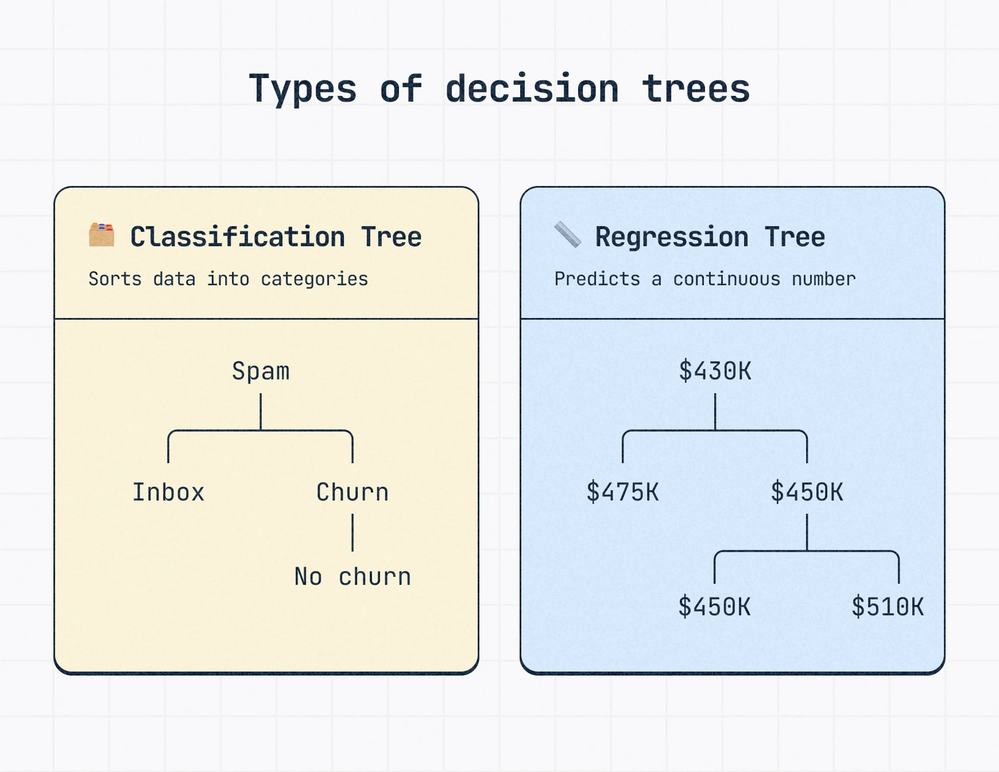
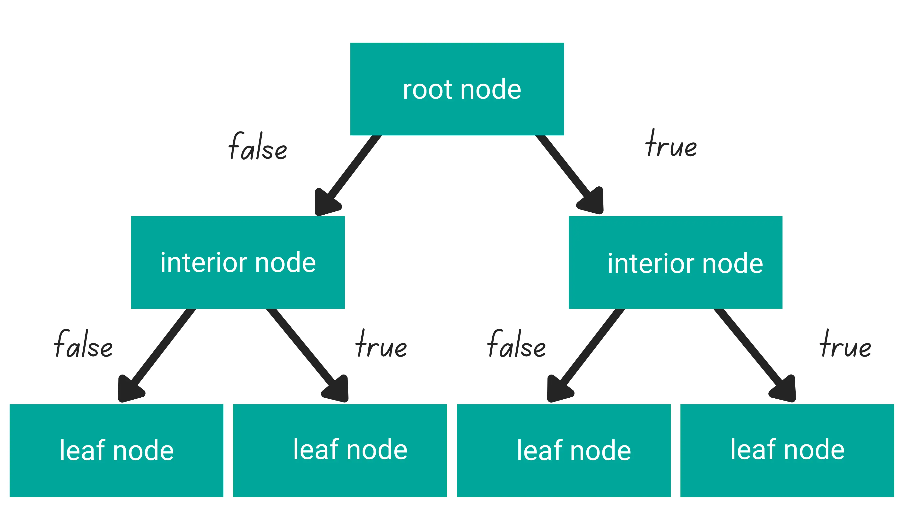
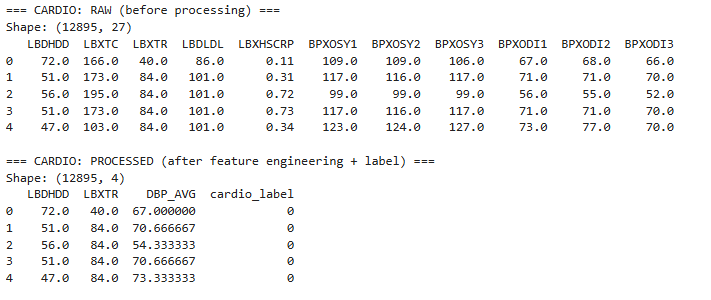
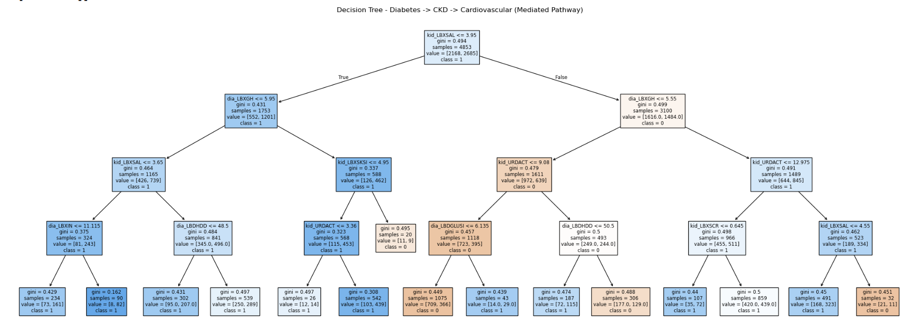
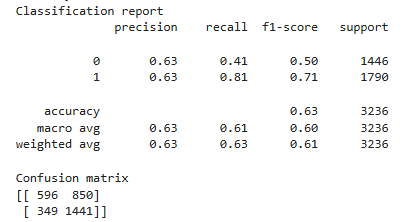
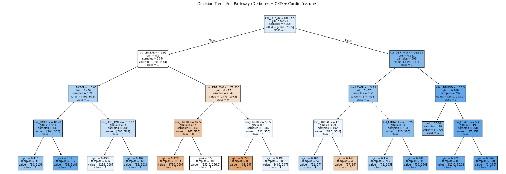
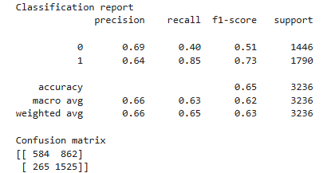
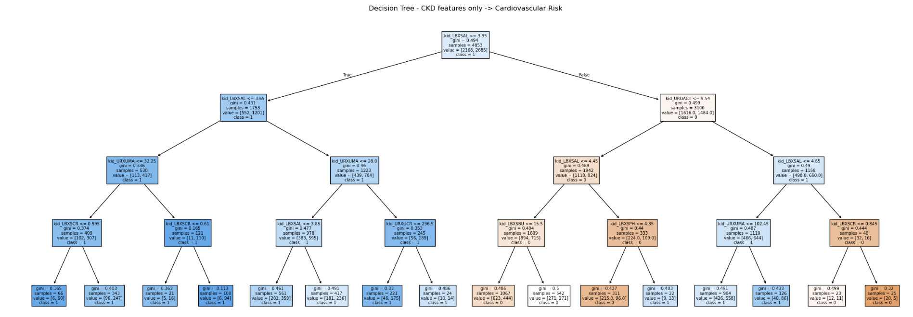
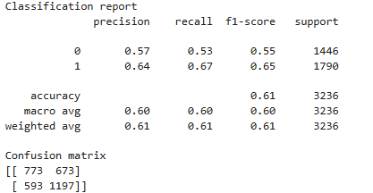

Decision Trees and Gini Impurity
(a) Overview
Decision Trees are a supervised learning method that allows for hierarchical classification and regression using a tree structure consisting of a root node, branches, and leaf nodes. Decision trees are especially useful for step-by-step and if-then decision making. Another key aspect of decision trees is their ability to highlight the most important features that impact the outcome. By repeatedly splitting data into smaller groups based on feature values, decision trees create a model that is easy to interpret and visualize. Figure 2 shows the basic structure of a decision tree, including the root node, decision branches, and leaf nodes.
Within decision trees, Gini impurity measures the likelihood of an incorrect classification for an element if it were randomly assigned a label according to the distribution of classes in a node. Gini impurity is useful for optimizing feature splits within a decision tree and is computationally efficient, especially on higher-dimensional datasets. Because it computes the probability of misclassification, minimizing this value helps create a more accurate decision tree. For example, if there are two classes and the sample is evenly split between them, the Gini impurity can be calculated as: Gini = 1 − (0.5² + 0.5²) = 0.5 This result makes sense because the model would have a 50% probability of selecting the correct class for a randomly chosen data point. Furthermore, the Gini impurity score is used to select the best way to divide a dataset in order to increase the "purity" of a node.
Unlike Gini impurity, entropy measures the level of randomness or uncertainty regarding a node's classification. Entropy is also used to find the best feature splits to create the purest possible nodes, but it uses logarithmic calculations instead of squared probabilities, making it more computationally expensive. While both measures often produce similar trees, entropy is generally more sensitive to changes in class distribution. Like Gini impurity, entropy is used alongside Information Gain to evaluate potential splits.
Information Gain measures the reduction in impurity after a split is made. For entropy, Information Gain is calculated as: Information Gain = Entropy(Parent Node) − Weighted Average Entropy(Child Nodes). For example, suppose a parent node contains 10 observations, with 5 positive cases and 5 negative cases. The entropy of the parent node is: Entropy = −(0.5 log₂(0.5) + 0.5 log₂(0.5)) = 1.0 Now suppose a split produces two child nodes. The first child contains 4 positive cases and 1 negative case, while the second contains 1 positive case and 4 negative cases. Each child node has an entropy of approximately 0.722. The weighted entropy after the split is therefore: (5/10 × 0.722) + (5/10 × 0.722) = 0.722, making the information gain 1.0 - 0.722 = 0.278. Since the entropy decreases after the split, the node becomes more pure, indicating that the split improved the classification ability of the tree. Decision tree algorithms evaluate many possible splits and the one with highest information gain or lowest impurity is the best selection.
It is possible to create an infinite number of decision trees because of the numerous ways to split features and thresholds, as well as choosing different tree depths and criteria to end the algorithm. A single dataset can potentially produce numerous different tree structure, and the varying combinations of all these choices create an infinite number of decision trees.
Decision tree integration in this project will focus on examining potential biological pathways, specifically the possibility of mediation between cardiovascular disease and diabetes. The decision trees modeled will not be used to demonstrate exact causal relationships, but they may help reveal pathways through which conditions are associated with one another. Two primary pathways examined through biomarker data are renal function decline, which reflects the presence and severity of Chronic Kidney Disease (CKD), and microvascular stress, which contributes to systemic cardiovascular damage. For this aspect of the project, the primary pathway of interest is Diabetes → CKD → Cardiovascular Disease. Decision trees are particularly useful because they can identify which biomarkers contribute most strongly to classification decisions and can reveal nonlinear relationships that may not be apparent through traditional statistical analyses.
A limitation that will be considered throughout this analysis is that the NHANES datasets are cross-sectional, emphasizing why decision trees cannot be used for exact causal or progression analysis. Most participants contributed only a single blood draw from which these biomarkers were derived, and the outcomes across all datasets do not necessarily correspond to the exact same participants. As a result, the trees cannot capture directional or temporal relationships between disease progression. Rather than demonstrating progression, the decision trees will identify simultaneous statistical associations that may reveal potential pathways. Mortality-related cardiovascular outcomes will provide additional context for understanding possible disease progression, but the results should be interpreted as exploratory rather than causal.
For the decision tree models used in this project, splits will be determined using Gini impurity. Because the biomarker datasets contain a relatively large number of features and observations, Gini impurity provides an efficient method for evaluating candidate splits while maintaining strong classification performance.
Overview Images

Figure 1. What is a Decision Tree? - Stephanie Wells, Slickplan

Figure 2. "Machine Learning Algorithms You Should Know for Data Science - strata scratch"
(b) Data Preparation
Decision trees have generally few hard requirements for data preparation. The requirements they do have include labeled data for supervised learning, no missing values, and a clean split. As opposed to the data preparation required for applying naive bayes, decision trees handle both discrete and continuous data, making it unnecessary to discretize data.
Labeled data is necessary for the model to ‘adjust’ predictions, as it forms a clear target for the model. In this project, labels came from clinical thresholds applied to biomarkers in the NHANES files. The cardiovascular label (cardio_label) was assigned as 1 if the following conditions were met: LDL cholesterol (LBDLDL) ≥ 130 mg/dL, total cholesterol (LBXTC) ≥ 240 mg/dL, average systolic blood pressure (SBP_AVG) ≥ 140 mmHg, or high-sensitivity CRP (LBXHSCRP) ≥ 3.0 mg/L. These were then removed from the features of cardiovascular data to avoid data leakage. The kidney and diabetes NHANES label were set during previous clustering.
It is important to note a limitation specific to the cardiovascular tree: four of the features in features_cardio (LBDLDL, LBXTC, SBP_AVG, LBXHSCRP) are the same variables used to define cardio_label. When all three tiers of features are included together in the full pathway tree, the model can rediscover the label formula and achieves 1.00 accuracy, due to those label-defining variables making the outcome deterministic. This is addressed by excluding those four variables from the full pathway tree and retaining only the cardio features not used in label construction (DBP_AVG and LBDHDD).
Missing values was checked similarly as in Naive Bayes. Each dataset was checked for NaN entries, and all were found to have zero missing values. The kidney dataset contained 8,458 respondents across 8 features with zero missing values, the diabetes dataset contained 11,053 respondents across 7 features with zero missing values, and the cardio dataset contained 12,895 respondents across 7 features (plus the two computed BP averages) with zero missing values.A secondary check was also performed for NHANES-specific placeholder codes (7777, 9999, 8888, 6666, -1), which NHANES occasionally uses to encode missing or refused responses as seemingly valid numbers. None were found in any of the three datasets. As a precaution, median imputation was still applied via SimpleImputer in case of any residual NaN values introduced during the inner merge step. As mentioned in Naive Bayes, it is important to note that NHANES datasets may be imputed by default biological levels. This can be seen in the repeated values check, which is especially prevalent for the variables LBDGLUSI (fasting glucose), LBDLD, and LBXIN. The tree will still be able to split around these values, but imputation boundaries may be reflected in the splits.
For the tree examining pathway analysis, SEQN served as a join key to merge all three datasets into a single table, which required all the NHANES datasets to be in the same group. The merge used an inner join. This reduced the usable sample to 8,089 respondents, with the largest attrition on the cardio side (4,806 respondents not found in all three) and the smallest on the kidney side (369 lost). This is expected from the NHANES panel design, as not every participant receives each lab module. Column name collisions were addressed by prefixing each tier's features before merging: diabetes features were renamed with a dia_ prefix, kidney features with kid_, and cardio features with car_. This was necessary because several variables (LBDHDD, LBXTC, LBDLDL, LBXTR) appear in both the diabetes and cardio lab files under identical NHANES variable names.
Train/Test Split (and Stratification)
The data was split into a 60% training set and a 40% test set using train_test_split with random_state=42 for reproducibility, and stratify=y to preserve the label distribution across both halves. The training set is what the decision tree uses to learn, specifically by scanning all possible feature thresholds at each node and selecting the split that produces the greatest reduction in impurity (Gini impurity in this implementation). The test set must be disjoint from the training set, as it is used to evaluate how well the tree generalizes data it is unfamiliar with.Stratification was also applied due to an imbalance in label classes. In the merge dataset, class 1 (elevated cardiovascular risk), is about 55% of the same. Stratification ensures that neither the training or test set have a disproportionate share of one class.
Dataset Links
Kidney: nhanes_kidney_cleaned.csv
Diabetes: nhanes_diabetes_cleaned.csv
Cardiovascular: nhanes_cardio_cleaned.csv
Data Preparation Example

Figure 1. Example of raw dataset before feature selecting and processing, followed by after processing.
(c) Code
The code was done using sklearn DecisionTreeClassifier, as well as the plot_tree method for visuals. The workflow included loading and cleaning the data, then creating a fundamental decision tree function, which was then applied for the three decision trees.
(d) Results
Model performance was evaluated using precision, recall, accuracy, and confusion matrices. Because the datasets are imbalanced, recall for the positive class (disease presence) is especially important, since false negatives represent missed diagnoses. Precision measures how many predicted positives are accurate, while recall measures the number of positives actually found.
Diabetes -> CKD -> Cardiovascular (Mediated Pathway)


The mediated tree shows an accuracy of 0.629. It used 12 features; 4 glycemic/metabolic markers from the diabetes set, and 8 kidney function markers from the kidney dataset, in order to predict cardiovascular risk without direct cardiovascular biomarkers. The accuracy of 0.629 represents the tree's ability to identify cardiovascular risk purely from metabolic and renal signals. The most important feature found was kid_LBXSAL (serum albumin) which formed the root split at <= 3.95 g/dL. Low serum albumin is a marker of systemic inflammation, malnutrion associated with chronic kidney disease, and proteinuria (albumin loss). Clinically, this is a strong indicator of CKD progression. The second most was dia_LBXGH (HbA1c, aka hemoglobin A1c) which appeared as second-level split on both branches of the tree. This positioning indicates that HbA1c was a significant glycemic signal,showing the blood sugar levels may provide crucial information about cardiovascular risk. The third most important variable was kid_URDACT (albumin-to-creatinine ratio) whih appeared as depth 3 on the high-albumin branch, capturing albuminuria severity as further refinement. All three of these features (serum albumin, HbA1c, and ACR) are clinically established biomarkers of the diabetes-to-CKD-to-cardiovascular progression, supporting the mediation pathway being examined.
The confusion matrix shows the model correctly identified 1,441 of the 1790 at-risk respondents (recall 0f 0.81 for class 1) while misclassifying 850 of 1,446 healthy respondents as at-risk (low recall for class 0). The asymmetry is expected due to the imbalance of the data being trained, as class 1 is the majority. Precision was equal to 063 for both classes. The F1 if 0.60 reflectes imperfect signal, expected for a tree which excluded direct cardiovascular biomarkers.
Full Pathway (Diabetes + CKD + Cardio Features)


This tree added three non-leaking cardio-tier features to the mediated tree's 1 feature: car_DBP_AVG (diastolic blood pressure), car_LBXTR (triglycerides), and car_LBDHDD (HDL cholestrol). These were not used to construct the cardiovascular label variable as introduce additional signal without encoding the label formula. Accuracy rose about 2.3% from Tree 1, which an accuracy score of 0.652. The feature importance drastically changed, as car_DBP_AVG because the most important feature, forming the root split at <= 0.83.5 mmHg. This is clinically relevant, as elevated diastolic blood pressure is a marker of vascular resistance and a known risk factor for cardiovascular disease. kid_LBXSAL was the secon dmost important, retaining its role as the primary renal signal. car_LBXTR (triglycerides) appeared at depth 3 on the DBP branch. dia_LBXGH (HbA1c, 0.030) and kid_URDACT contributed at lower levels. The tree diagram shows DBP_AVG at the root splitting into two structurally distinct subtrees, with kidney and glycemic features doing refinement work at deeper levels. This is a visible shift from Tree 1, where the root split was a kidney marker and HbA1c appeared at depth 2.
Recall for class 1 improved from 0.81 to 0.85 with the addition of cardio features, and precision for class 0 improved from 0.63 to 0.69. The 2.3-point accuracy gain over Tree 1 indicates that DBP and triglycerides carry genuine cardiovascular signal not already captured by renal and glycemic markers. However, this is modest and consistet with kiney function markers accounting for majority of the diabetes-to-cardiovascular signal available.
CKD Features Only -> Cardiovascular Risk


This tree used only the 8 kidney function markers, with no diabetes or cardio features. Its purpose is to isolate the renal tier's standalone predictive contribution to cardiovascular risk, providing the baseline against which the mediation argument is evaluated. The most important feature was again kid_LBXSAL (importance 0.658), forming the root split at <= 3.95 g/dL, identical threshold to Tree 1. kid_URDACT (0.160) and kid_URXUMA (0.094) were second and third, with URXUMA (urinary albumin) appearing at depth 3 on multiple branches, reflecting the albuminuria gradient as a graded cardiovascular risk signal. kid_LBXSCR (creatinine, 0.036) appeared at depth 3 as a late-stage renal function marker. The remaining four kidney features contributed negligible importance.
The CKD-only tree correctly identified 1,197 of 1,790 at-risk respondents (recall 0.67), notably lower than Tree 1's 0.81. This drop confirms that glycemic features -- particularly HbA1c -- add meaningful independent signal to cardiovascular risk prediction beyond what kidney markers alone provide.
(e) Conclusions
The three accuracy values (0.609 for CKD only, 0.629 for diabetes & CKD, and 0.652 for all three tiers) all show progression which supports the pathway hypothesis. The gap between tree 3 and tree 1 show a marginal contribution of glycemic kidney markers alone. HbA1c appear as a second-level split in tree 1 on both branches, suggesting it capures residual metabolic risk that is not always found by kidney markers alone. This is consistent with partial mediation: CKD sits between the pathways between diabetes and cardiovascular risk, but does not fully account for it.
The gap between the first and second tree represent the marginal contribution of non-leaking cardiovascular features. The shift in the tree does indicate that diastolic blood preasure carries the strongest cardiovascular signal in this dataset among features given, also operating somewhat independently of the renal and glycemic markers.
The limitation is reiterated; as the NHANES data is cross-sectional, such that the biomarkers are from a single timepoint rather than longitudinaly measured, means these trees identify statistical co-occurence among these biomarkers. To effectively measure the development and progression, longitudinal data would further suffice. The observed associates, such as low serum albumin co-occuring with elevated HbA1c co-occuring with elevated cardiovascular risk, are relevant and concistent with the diabetes-to-CKD-toCVD pathway, but directionality cannot be captured. The feature importances and accuracy gaps are interpreted as being consistent evidence for this pathway, but fails to demonstrate causation.